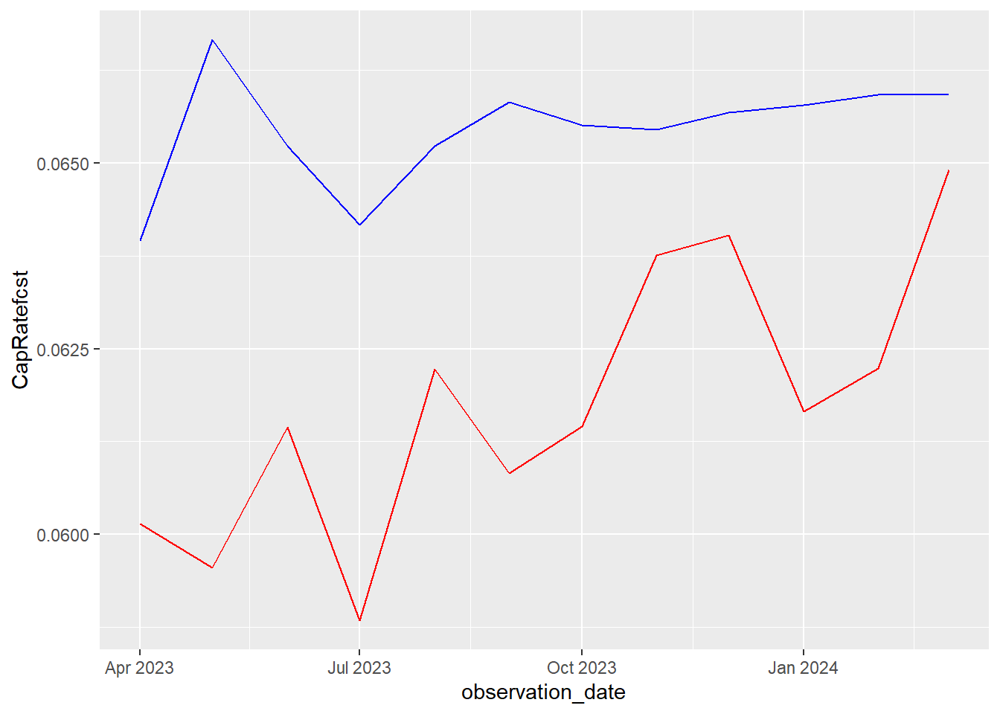
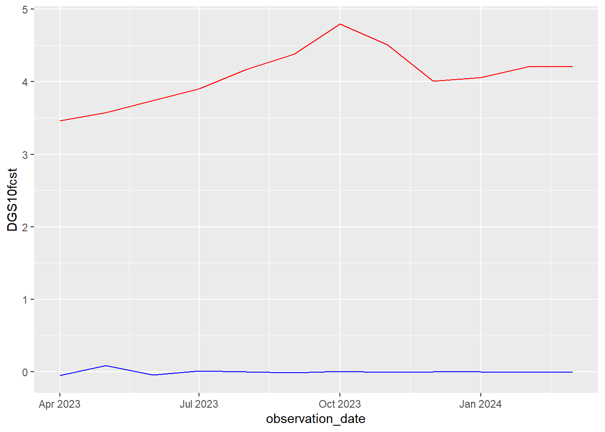
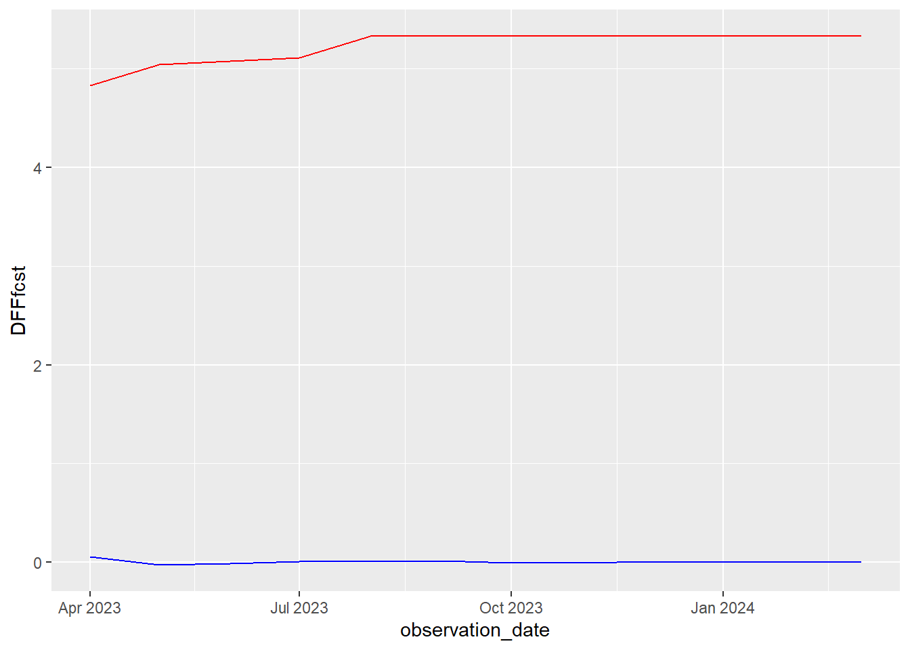

── Conflicts ────────────────────────────────────────── tidyverse_conflicts() ──
✖ stringr::boundary() masks strucchange::boundary()
✖ dplyr::filter() masks stats::filter()
✖ dplyr::lag() masks stats::lag()
✖ dplyr::select() masks MASS::select()
ℹ Use the conflicted package (<http://conflicted.r-lib.org/>) to force all conflicts to become errors
library(here)
here() starts at C:/Users/KSchmitt1/RStudio/InterestRates
# Create function: create_tscreate_ts <-function(data, column, time_period, frequency =12) { start <- time_period$start end <- time_period$endts(data[[column]], start = start, end = end, frequency = frequency)}
# Create time period liststime_period_full <-list(start =c(2013, 4), end =c(2024, 3))time_period_old <-list(start =c(2013,4), end =c(2023,3))time_period_actual <-list(start =c(2023, 4), end =c(2024, 3))
# Define new differenced variablesDGS10_d2 <-ts(DGS10_d2, start =c(2013, 4), end =c(2024, 3), frequency =12)DFF_d2 <-ts(DFF_d2, start =c(2013, 4), end =c(2024, 3), frequency =12)
# Add new differenced variables to dataframenewfinal_monthly_all$DGS10_d2 <- DGS10_d2newfinal_monthly_all$DFF_d2 <- DFF_d2
Subset data
My first step is replicating the original forecast. I need a shortened data set with just that time segment.
Old data
This is the time segment I used for my original analysis. (4/13-3/23)
# Subset dataframe to make one with shortened, original dataolddata <-subset(newfinal_monthly_all, select =c(observation_date, cap, DGS10, DFF, lnDGS10, lnDFF), observation_date <as.Date("2023-04-01"))colnames(olddata) =c("observation_date", "CapRate", "DGS10", "DFF", "lnDGS10", "lnDFF")
# Define new matrix variables with old timeframeoldCapRate <-ts(olddata$CapRate, start =c(2013, 4), end =c(2023, 3), frequency =12)oldDGS10 <-ts(olddata$DGS10, start =c(2013, 4), end =c(2023, 3), frequency =12)oldDFF <-ts(olddata$DFF, start =c(2013, 4), end =c(2023, 3), frequency =12)oldlnDGS10 <-ts(olddata$lnDGS10, start =c(2013, 4), end =c(2023, 3), frequency =12)oldlnDFF <-ts(olddata$lnDFF, start =c(2013, 4), end =c(2023, 3), frequency =12)# Create difference variables (old)oldDGS10_d2 <-diff(oldDGS10, differences =2)oldDFF_d2 <-diff(oldDFF, differences =2)# Define new variables (old)oldDGS10_d2 <-ts(oldDGS10_d2, start =c(2013, 4), end =c(2023, 3), frequency =12)oldDFF_d2 <-ts(oldDFF_d2, start =c(2013, 4), end =c(2023, 3), frequency =12)
Actual data
This is the time segment between my original analysis and my new data.
# Define new matrix variables with 'actual' timeframeactualCapRate <-ts(actualdata$CapRate, start =c(2023, 4), end =c(2024, 3), frequency =12)actualDGS10 <-ts(actualdata$DGS10, start =c(2023, 4), end =c(2024, 3), frequency =12)actualDFF <-ts(actualdata$DFF, start =c(2023, 4), end =c(2024, 3), frequency =12)actuallnDGS10 <-ts(actualdata$lnDGS10, start =c(2023, 4), end =c(2024, 3), frequency =12)actuallnDFF <-ts(actualdata$lnDFF, start =c(2023, 4), end =c(2024, 3), frequency =12)# Create difference variables (old)actualDGS10_d2 <-diff(actualDGS10, differences =2)actualDFF_d2 <-diff(actualDFF, differences =2)# Define new variables (old)actualDGS10_d2 <-ts(actualDGS10_d2, start =c(2023, 4), end =c(2024, 3), frequency =12)actualDFF_d2 <-ts(actualDFF_d2, start =c(2023, 4), end =c(2024, 3), frequency =12)
Build model (old)
# Make new dataframe with only model variablesolddf <-cbind(oldCapRate, oldDGS10_d2, oldDFF_d2)colnames(olddf) <-cbind("CapRate", "DGS10", "DFF")
# Determine lag orderlagselect <-VARselect(olddf, lag.max =15, type ="const")lagselect$selection
AIC(n) HQ(n) SC(n) FPE(n)
4 2 2 4
# Create modeloldModel <-VAR(olddf, p =4, type ="const", season =NULL, exog =NULL)
Forecast (old)
originalforecast <-predict(oldModel, n.ahead =12, ci =0.95)
Extract forecast values (old)
# Import csv of forecast valuesoldforecast <-read_excel("C:/Users/kschmitt1/Knipp Wolf NLG Dropbox/Knipp Group Team Folder/5 - STAFF/3 - STAFF/KSchmitt/Research Reports/Interest Rates (General Report 1)/oldforecast.xlsx")oldforecast$observation_date <-as.Date(oldforecast$observation_date)
Compare old forecast to new values
Line graph
Cap rate
ggplot() +geom_line(data = oldforecast, aes(x = observation_date, y = CapRatefcst), color ="blue") +geom_line(data = actualdata, aes(x = observation_date, y = CapRate), color ="red")

DGS10
ggplot() +geom_line(data = oldforecast, aes(x = observation_date, y = DGS10fcst), color ="blue") +geom_line(data = actualdata, aes(x = observation_date, y = DGS10), color ="red")

DFF
ggplot() +geom_line(data = oldforecast, aes(x = observation_date, y = DFFfcst), color ="blue") +geom_line(data = actualdata, aes(x = observation_date, y = DFF), color ="red")

Absolute difference
# Create new df for error measurementserror <-data.frame(observation_date=as.Date(oldforecast$observation_date))## Absolute differenceserror$CapRate_absolute_difference=abs(c(oldforecast$CapRatefcst-actualdata$CapRate))error$DGS10_absolute_difference=abs(c(oldforecast$DGS10fcst-actualdata$DGS10))error$DFF_absolute_difference=abs(c(oldforecast$DFFfcst-actualdata$DFF))
# Make new dataframe with only model variablesnewdf <-cbind(CapRate, DGS10_d2, DFF_d2)colnames(newdf) <-cbind("CapRate", "DGS10", "DFF")
# Determine lag orderlagselect <-VARselect(newdf, lag.max =15, type ="const")lagselect$selection
AIC(n) HQ(n) SC(n) FPE(n)
4 2 2 4
# Create modelnewModel <-VAR(newdf, p =4, type ="const", season =NULL, exog =NULL)
Forecast (new)
newforecast <-predict(newModel, n.ahead =12, ci =0.95)
Extract forecast values (new)
# Import csv of forecast valuesnewforecast <-read_excel("C:/Users/kschmitt1/Knipp Wolf NLG Dropbox/Knipp Group Team Folder/5 - STAFF/3 - STAFF/KSchmitt/Research Reports/Interest Rates (General Report 1)/newforecast.xlsx")newforecast$observation_date <-as.Date(oldforecast$observation_date)
CURRENT PROBLEMS
I need to make sure that the model fitting and testing steps are correct for the new data
error on DGS10 and DFF are horrible.
what are the theoretical reasons for this, if any?
my model is really just to predict cap rates, not these variables, but it does kind of do that and the predictions of those impact the cap rate predictions.
did I mess something up?
should I include CI in forecast dfs?
I seemed to think before that I couldn’t do mape on individual variables, that it was for the whole model, but this was while I was just doing it for CapRate.